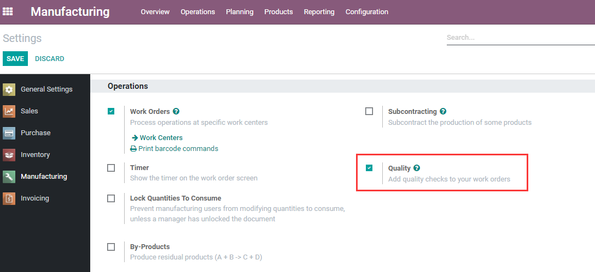
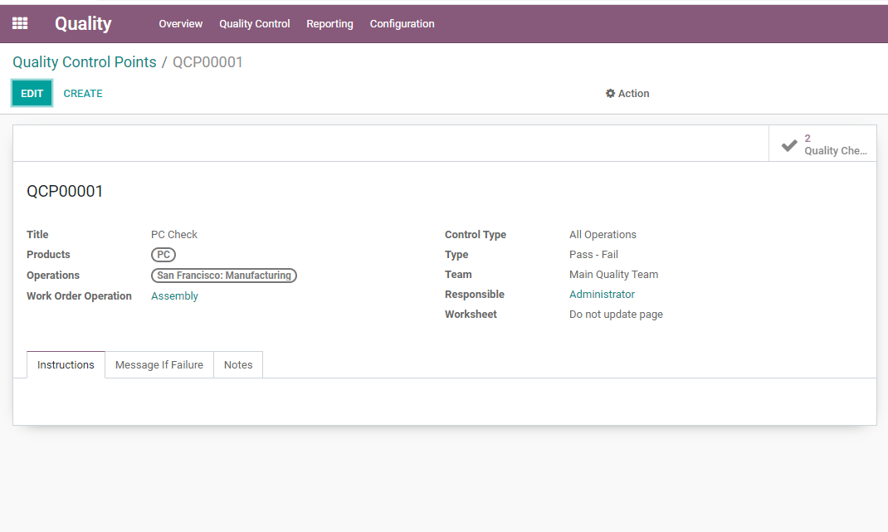
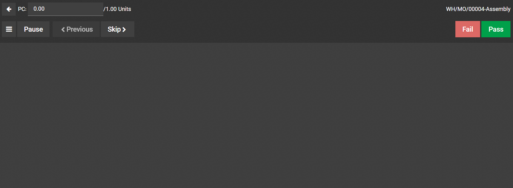
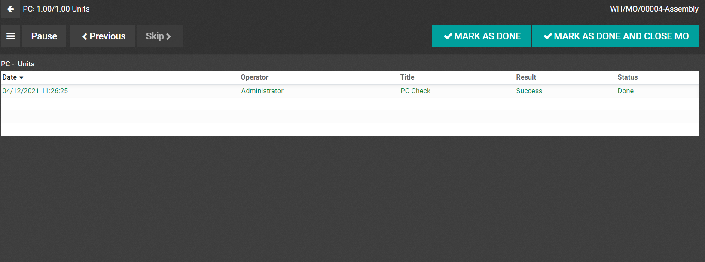

生产过程中，我可以对工单进行质量检测。
首先，我们要在MRP设置中打开质检设置:

设置完成后，我们可以在首页看到质检模块的入口，进入质检模块以后，创建一个质量检查点：

产品： 选择要进行质量检查的产品 操作： 这里选择生产 工艺中心： 选择要进行质量检测的工艺中心。
之后我们创建一个新的生产单：
之后我们打开工单，会看到会让我们进行质量检查：

只有质量检测通过之后才会显示处完成按钮。
